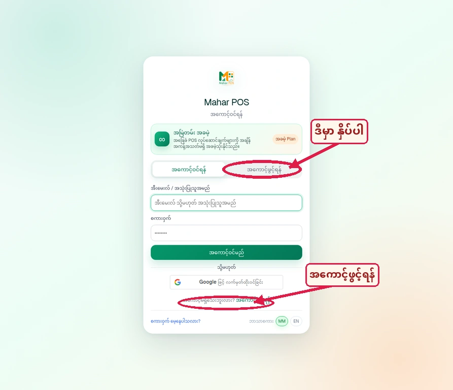
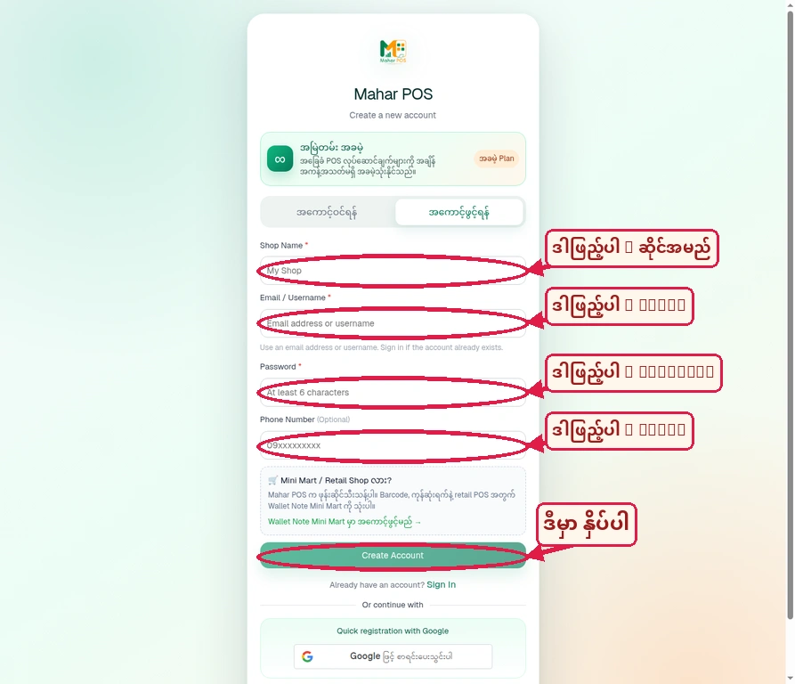
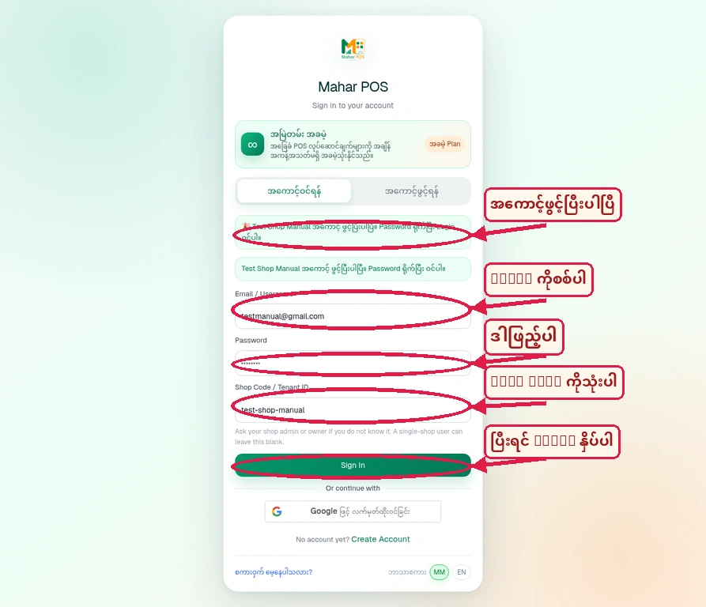

Mahar POS အကောင့်ဖွင့်နည်း
Registration လုပ်သည့်အဆင့်တိုင်းကို screenshot, အနီရောင် arrow, အနီရောင် circle နှင့် Myanmar labels များဖြင့် အလွယ်တကူလိုက်လုပ်နိုင်အောင် ပြထားပါသည်။
Landing / Login Page မှ Register ကိုရှာပါ
ပထမဆုံး app.maharpos.shop ကိုဖွင့်ပြီး အကောင့်ဖွင့်ရန် ခလုတ်ကို ရွေးပါ။

လုပ်ဆောင်ရန်
Login box ထဲတွင် အကောင့်ဖွင့်ရန် tab သို့မဟုတ် အောက်ဘက်ရှိ အကောင့်ဖွင့်ရန် link ကိုနှိပ်ပါ။
Annotation အဓိပ္ပါယ်
ဒီမှာ နှိပ်ပါ ဆိုသည့် label နှင့် arrow သည် Register ကိုနှိပ်ရမည့်နေရာကိုညွှန်ပြပါသည်။
Registration Form ကိုဖြည့်ပါ
အကောင့်ဖွင့်ရန် လိုအပ်သော အချက်အလက်များကို field တစ်ခုချင်းစီတွင် ဖြည့်ပါ။

ဖြည့်ရမည့် Fields
Shop Name — ဆိုင်အမည်
Email / Username — Email သို့မဟုတ် username
Password — အနည်းဆုံး ၆ လုံး
Phone Number — ဖုန်းနံပါတ် (optional)
ပြီးဆုံးရန်
အချက်အလက်အားလုံးစစ်ပြီး Create Account ခလုတ်ကိုနှိပ်ပါ။ Screenshot ထဲက ဒါဖြည့်ပါ သည် field ဖြည့်ရန်၊ ဒီမှာ နှိပ်ပါ သည် submit လုပ်ရန်ဖြစ်သည်။
Registration ပြီးနောက် Login ဝင်ပါ
Account ဖန်တီးပြီးသည်နှင့် app သည် Login screen သို့ ပြန်သွားပြီး အောင်မြင်ကြောင်း message ပြပါသည်။

အောင်မြင်ကြောင်း Message
Test Shop Manual အကောင့် ဖွင့်ပြီးပါပြီ ဟု message ပေါ်လာပါသည်။ Verification email သီးခြားမတောင်းဘဲ Login လုပ်ရန် ဆက်သွားနိုင်ပါသည်။
Login အတွက် ဖြည့်ရန်
Email / Username — Register လုပ်ထားသော email
Password — သတ်မှတ်ထားသော password
Shop Code / Tenant ID — screen တွင် auto-filled code; single-shop user ဖြစ်ပါက blank ထားနိုင်သည်။